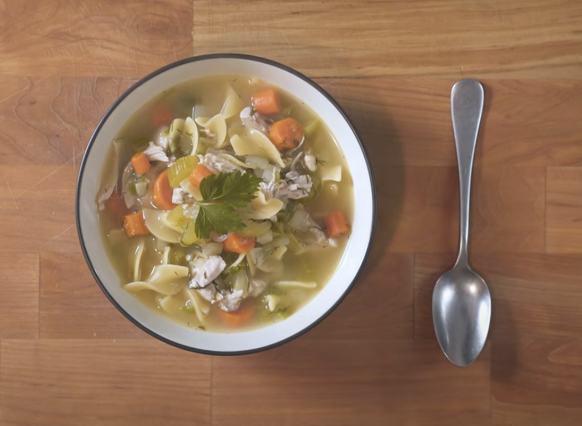

Chicken Noodle Soup

Description
This is a recipe for a chicken noodle soup made with homemade chicken stock, for stock recipe, click here.
Ingredients
- Celery
- Carrots
- Leeks
- Parsnips
- Turnips
- Garlic (entire head)
- White onions
- Chicken spines or wings
- Vegetable or canola oil
- Fresh thyme
- Fresh parsley
- Whole peppercorns
- Olive oil
- Fresh ginger
- Fresh lemongrass
- Boneless, skinless chicken thighs
- Fresh dill
- Scallions
- Salt
- Egg noodles
Instructions
- Begin by roughly chopping celery, carrots, a finely chopped parsnip and turnip and palce into a bowl.
- Seperately chop an onion and set to the side.
- In a large pot, heat some oil over medium-high heat until shimmering then add the onions. Saute until softened.
- Add the rest of the vegetables and warming through before addin stock.
- Over high heat bring to a simmer.
- While coming up to a simmer, add in chopped parsley, grated ginger and lemongrass.
- Once boiling, add in the chicken thighs and skim off any fat that rises to the surface as it cooks.
- After 15-20 minutes, remove the chicken and shred using a pair of forks before adding back to the pot.
- Right at the end add fresh chopped dill along with minced scallions. Cook for no mroe than 1 minute. Season with salt.
- In a medium pot, add a few ladles full of the soup along with some noodles season with salt and cook until noodles are finished.